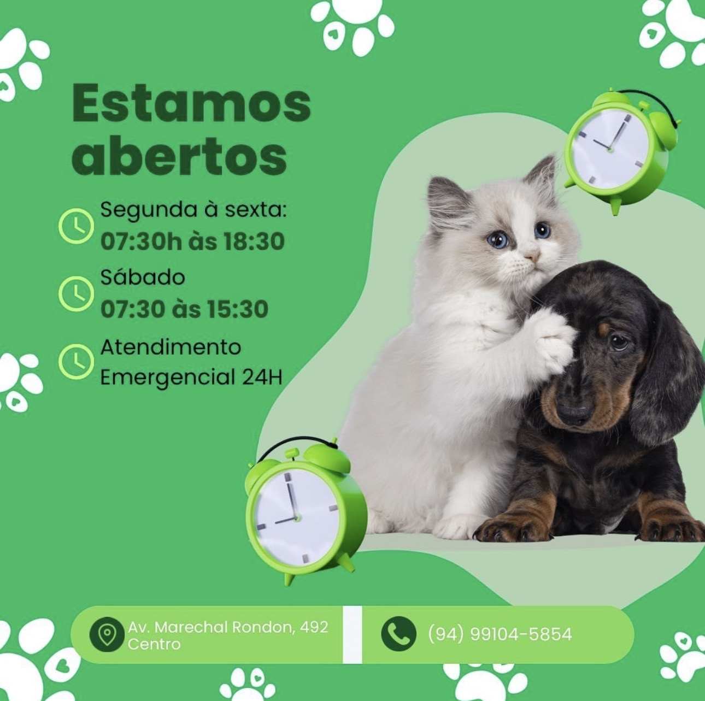

Rações em geral
Atendimento com foco em praticidade, cuidado e bem-estar do seu pet.
A Arca de Noé Clínica Veterinária e Pet Shop reúne atendimento veterinário, banho, cirurgias, medicamentos, acessórios e produtos essenciais em um só lugar.


O site foi pensado com a identidade visual das peças fornecidas: verde vibrante, verde profundo, cantos suaves e destaque total para os animais e para os botões de contato.
Atendimento com foco em praticidade, cuidado e bem-estar do seu pet.
Atendimento com foco em praticidade, cuidado e bem-estar do seu pet.
Atendimento com foco em praticidade, cuidado e bem-estar do seu pet.
Atendimento com foco em praticidade, cuidado e bem-estar do seu pet.
Atendimento com foco em praticidade, cuidado e bem-estar do seu pet.
Atendimento com foco em praticidade, cuidado e bem-estar do seu pet.
Atendimento com foco em praticidade, cuidado e bem-estar do seu pet.
Porque cachorro e gato não leem agenda. Quando o caos resolve aparecer, a clínica conta com atendimento emergencial 24 horas.
07:30h às 18:30
07:30h às 15:30
Atendimento 24h
Direcionamento direto para o Instagram e para o WhatsApp, sem labirinto digital e sem botão decorativo inútil.